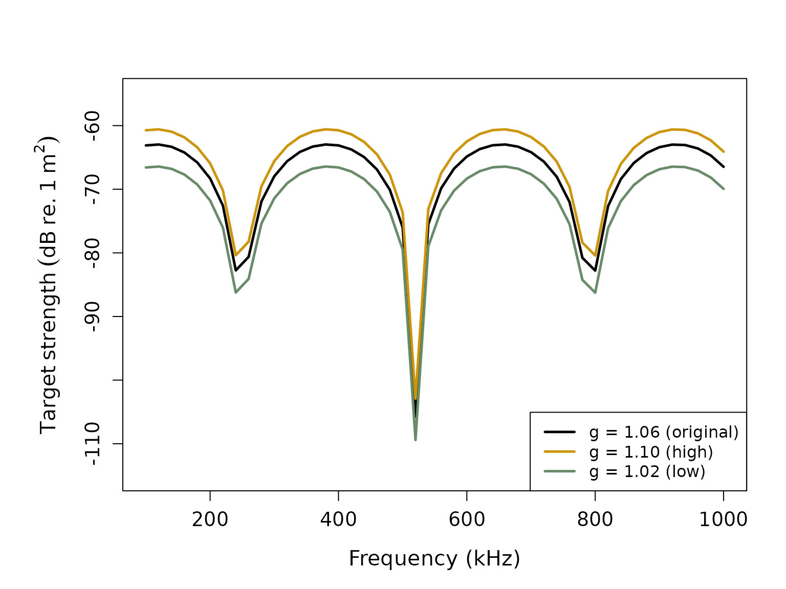
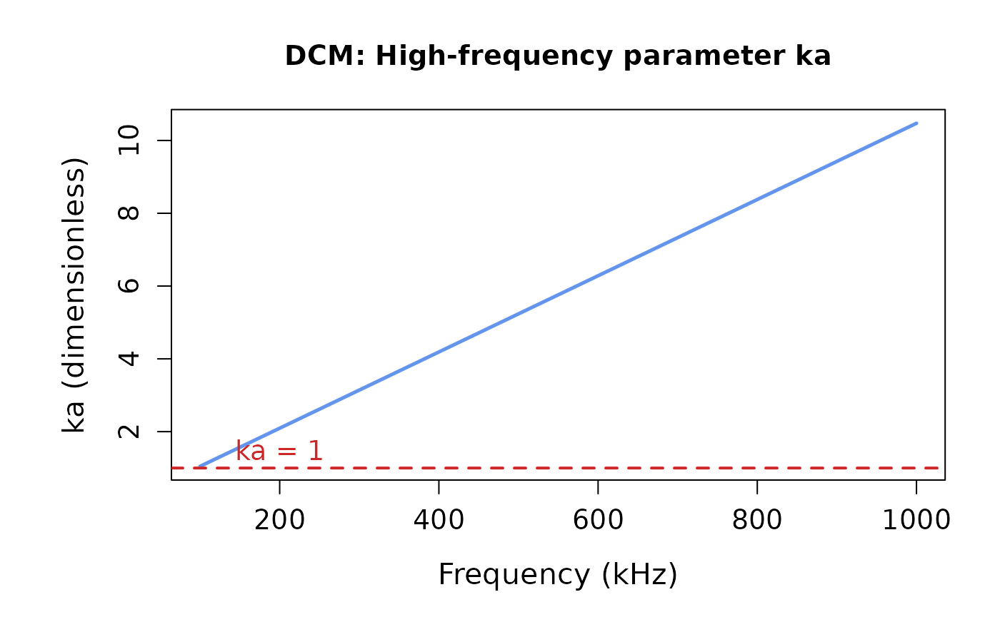

Target strength modeling with the Deformed Cylinder Model (DCM)
Brandyn Lucca (https://orcid.org/0000-0003-3145-2969)
Source:vignettes/dcm_deformed_cylinder_model_vignette.Rmd
dcm_deformed_cylinder_model_vignette.RmdIntroduction
The Deformed Cylinder Model (DCM) is a high-frequency approximation for modeling acoustic backscatter from elongated fluid-like organisms such as zooplankton1. The DCM treats scatterers as deformed cylinders with curved bodies, incorporating both geometric and material properties to predict target strength. This model is particularly effective for modeling crustacean zooplankton like copepods and krill at high frequencies where the acoustic wavelength is much smaller than the organism size.
acousticTS implementation
The acousticTS package provides the DCM implementation
for fluid-like scatterers of the FLS (Fluid-Like Scatterer)
class. The DCM incorporates:
- Geometric properties: Body length, radius, and radius of curvature
- Material properties: Density and sound speed contrasts relative to seawater
- Orientation effects: Scatterer orientation relative to the incident sound wave
- High-frequency approximations: Ray-based approach with interference terms
# Call in package library
library(acousticTS)##
## Attaching package: 'acousticTS'## The following object is masked from 'package:base':
##
## kappaCreating DCM scatterer objects
Basic cylindrical scatterer
Let’s create a simple cylindrical scatterer representing a generic zooplankton organism:
# Create a simple cylinder shape
cylinder_shape <- cylinder(
length_body = 20e-3, # 20 mm length
radius_body = 2.5e-3, # 2.5 mm radius
n_segments = 50 # 50 discrete segments
)
# Create FLS object with the cylinder shape
cylinder_scatterer <- fls_generate(
shape = cylinder_shape,
g_body = 1.06, # Density contrast (ρ_body/ρ_water)
h_body = 1.06, # Sound speed contrast (c_body/c_water)
theta_body = pi / 2 # Broadside orientation
)
# Display the object
cylinder_scatterer## FLS-object
## Fluid-like scatterer
## ID: UID
## Body dimensions:
## Length: 0.02 m (n = 50 cylinders)
## Mean radius: 0.0025 m
## Max radius: 0.0025 m
## Shape parameters:
## Defined shape: Cylinder
## L/a ratio: 8
## Taper order: NA
## Material properties:
## g: 1.06
## h: 1.06
## Body orientation (relative to transducer face/axis): 1.571 radiansUsing realistic zooplankton shapes
Let’s also create a more realistic curved zooplankton using a prolate spheroid:
# Create a prolate spheroid shape (more realistic for many zooplankton)
prolate_shape <- prolate_spheroid(
length_body = 18e-3, # 18 mm length
radius_body = 2e-3, # 2 mm maximum radius
n_segments = 50
)
# Create FLS object with prolate spheroid shape
prolate_scatterer <- fls_generate(
shape = prolate_shape,
g_body = 1.058, # Slightly different material properties
h_body = 1.058,
theta_body = pi / 2
)
prolate_scatterer## FLS-object
## Fluid-like scatterer
## ID: UID
## Body dimensions:
## Length: 0.018 m (n = 50 cylinders)
## Mean radius: 0.0015 m
## Max radius: 0.002 m
## Shape parameters:
## Defined shape: ProlateSpheroid
## L/a ratio: 9
## Taper order:
## Material properties:
## g: 1.058
## h: 1.058
## Body orientation (relative to transducer face/axis): 1.571 radiansLet’s visualize these shapes:
# Plot both shapes for comparison
plot(cylinder_scatterer, type = "shape")
plot(prolate_scatterer, type = "shape")
DCM model calculations
The DCM is designed for high-frequency applications where ka >> 1 (where k is the acoustic wavenumber and a is the characteristic radius). Let’s calculate target strength over a frequency range appropriate for the DCM:
# Define frequency vector focused on higher frequencies
frequency <- seq(100e3, 1000e3, 20e3) # 100 kHz to 1 MHz
# Calculate TS using DCM for cylinder
cylinder_scatterer <- target_strength(
object = cylinder_scatterer,
frequency = frequency,
model = "DCM"
)
# Calculate TS using DCM for prolate spheroid
prolate_scatterer <- target_strength(
object = prolate_scatterer,
frequency = frequency,
model = "DCM"
)Visualizing DCM results
Individual scatterer results
# Plot TS for the cylindrical scatterer
plot(cylinder_scatterer, type = "model")
# Plot TS for the prolate spheroid scatterer
plot(prolate_scatterer, type = "model")Shape comparison
# Extract model results for comparison
ts_cylinder <- extract(cylinder_scatterer, "model")$DCM
ts_prolate <- extract(prolate_scatterer, "model")$DCM
# Create comparison plot
plot(
x = ts_cylinder$frequency * 1e-3,
y = ts_cylinder$TS,
type = "l",
lty = 1,
lwd = 2.5,
col = "cornflowerblue",
xlab = "Frequency (kHz)",
ylab = expression(Target ~ strength ~ (dB ~ re. ~ 1 ~ m^2)),
cex.lab = 1.3,
cex.axis = 1.2,
main = "DCM: Shape Comparison"
)
lines(
x = ts_prolate$frequency * 1e-3,
y = ts_prolate$TS,
col = "firebrick3",
lty = 2,
lwd = 2.5
)
legend("bottomright",
c("Cylinder", "Prolate Spheroid"),
lty = c(1, 2),
lwd = c(2.5, 2.5),
col = c("cornflowerblue", "firebrick3"),
cex = 1.0
)DCM parameter sensitivity
Material property effects
The DCM is sensitive to the material property contrasts. Let’s explore this:
# Create scatterers with different density contrasts
high_contrast <- fls_generate(
shape = cylinder_shape,
g_body = 1.10, # Higher density contrast
h_body = 1.06,
theta_body = pi / 2
)
low_contrast <- fls_generate(
shape = cylinder_shape,
g_body = 1.02, # Lower density contrast
h_body = 1.06,
theta_body = pi / 2
)
# Calculate TS for both
high_contrast <- target_strength(high_contrast, frequency, "DCM")
low_contrast <- target_strength(low_contrast, frequency, "DCM")
# Extract results
ts_high <- extract(high_contrast, "model")$DCM
ts_low <- extract(low_contrast, "model")$DCM
ts_original <- extract(cylinder_scatterer, "model")$DCM
# Plot comparison
par(oma = c(0, 0.25, 0, 0), mar = c(5, 6, 4, 2))
plot(
x = ts_original$frequency * 1e-3,
y = ts_original$TS,
type = "l",
lty = 1,
lwd = 2.5,
xlab = "Frequency (kHz)",
ylab = expression(Target ~ strength ~ (dB ~ re. ~ 1 ~ m^2)),
ylim = c(-115, -55),
cex.lab = 1.3,
cex.axis = 1.2
)
lines(
x = ts_high$frequency * 1e-3,
y = ts_high$TS,
col = "darkgoldenrod3",
lty = 1,
lwd = 2.5
)
lines(
x = ts_low$frequency * 1e-3,
y = ts_low$TS,
col = "darkseagreen4",
lty = 1,
lwd = 2.5
)
legend("bottomright",
c("g = 1.06 (original)", "g = 1.10 (high)", "g = 1.02 (low)"),
lty = c(1, 1, 1),
lwd = c(2.5, 2.5, 2.5),
col = c("black", "darkgoldenrod3", "darkseagreen4"),
cex = 1.0
)
Orientation effects
The DCM includes a directivity function that accounts for the scatterer’s orientation:
# Create scatterers at different orientations
broadside <- fls_generate(
shape = cylinder_shape,
g_body = 1.06, h_body = 1.06,
theta_body = pi / 2 # 90° - broadside
)
oblique_80 <- fls_generate(
shape = cylinder_shape,
g_body = 1.06, h_body = 1.06,
theta_body = radians(80) # 80° - oblique
)
oblique_70 <- fls_generate(
shape = cylinder_shape,
g_body = 1.06, h_body = 1.06,
theta_body = radians(70) # 70° - more oblique
)
# Calculate TS for all orientations
broadside <- target_strength(broadside, frequency, "DCM")
oblique_80 <- target_strength(oblique_80, frequency, "DCM")
oblique_70 <- target_strength(oblique_70, frequency, "DCM")
# Extract results
ts_broadside <- extract(broadside, "model")$DCM
ts_80 <- extract(oblique_80, "model")$DCM
ts_70 <- extract(oblique_70, "model")$DCM
# Plot orientation comparison
par(oma = c(0, 0.25, 0, 0), mar = c(5, 6, 4, 2))
plot(
x = ts_broadside$frequency * 1e-3,
y = ts_broadside$TS,
type = "l",
lty = 1,
lwd = 2.5,
xlab = "Frequency (kHz)",
ylab = expression(Target ~ strength ~ (dB ~ re. ~ 1 ~ m^2)),
cex.lab = 1.3,
cex.axis = 1.2,
ylim = c(-140, -60)
)
lines(
x = ts_80$frequency * 1e-3,
y = ts_80$TS,
col = "darkgoldenrod2",
lty = 1,
lwd = 2.5
)
lines(
x = ts_70$frequency * 1e-3,
y = ts_70$TS,
col = "firebrick3",
lty = 1,
lwd = 2.5
)
legend("bottomright",
c("Broadside (90°)", "Oblique (80°)", "Oblique (70°)"),
lty = c(1, 1, 1),
lwd = c(2.5, 2.5, 2.5),
col = c("black", "darkgoldenrod2", "firebrick3"),
cex = 1.0
)Size effects
Let’s examine how organism size affects DCM predictions:
# Create scatterers of different sizes
small_shape <- cylinder(
length_body = 10e-3,
radius_body = 1.5e-3,
n_segments = 50
)
medium_shape <- cylinder(
length_body = 20e-3,
radius_body = 2.5e-3,
n_segments = 50
)
large_shape <- cylinder(
length_body = 40e-3,
radius_body = 4e-3,
n_segments = 50
)
small_scatterer <- fls_generate(
shape = small_shape,
g_body = 1.06, h_body = 1.06,
theta_body = pi / 2
)
medium_scatterer <- fls_generate(
shape = medium_shape,
g_body = 1.06, h_body = 1.06,
theta_body = pi / 2
)
large_scatterer <- fls_generate(
shape = large_shape,
g_body = 1.06, h_body = 1.06,
theta_body = pi / 2
)
# Calculate TS
small_scatterer <- target_strength(small_scatterer, frequency, "DCM")
medium_scatterer <- target_strength(medium_scatterer, frequency, "DCM")
large_scatterer <- target_strength(large_scatterer, frequency, "DCM")
# Extract results
ts_small <- extract(small_scatterer, "model")$DCM
ts_medium <- extract(medium_scatterer, "model")$DCM
ts_large <- extract(large_scatterer, "model")$DCM
# Plot size comparison
par(oma = c(0, 0.25, 0, 0), mar = c(5, 6, 4, 2))
plot(
x = ts_small$frequency * 1e-3,
y = ts_small$TS,
type = "l",
lty = 1,
lwd = 2.5,
col = "cornflowerblue",
xlab = "Frequency (kHz)",
ylab = expression(Target ~ strength ~ (dB ~ re. ~ 1 ~ m^2)),
cex.lab = 1.3,
cex.axis = 1.2,
ylim = c(-100, -55)
)
lines(
x = ts_medium$frequency * 1e-3,
y = ts_medium$TS,
col = "darkgoldenrod3",
lty = 1,
lwd = 2.5
)
lines(
x = ts_large$frequency * 1e-3,
y = ts_large$TS,
col = "firebrick3",
lty = 1,
lwd = 2.5
)
legend("bottomright",
c("Small (10 mm)", "Medium (20 mm)", "Large (40 mm)"),
lty = c(1, 1, 1),
lwd = c(2.5, 2.5, 2.5),
col = c("cornflowerblue", "darkgoldenrod3", "firebrick3"),
cex = 1.0
)Model parameters and output
Extracting DCM results
The DCM results contain key information about the scattering calculations:
## frequency ka f_bs sigma_bs TS
## 1 100000 1.047198 -0.0004572902-5.284175e-04i 4.883393e-07 -63.11278
## 2 120000 1.256637 -0.0005527027-4.467593e-04i 5.050742e-07 -62.96645
## 3 140000 1.466077 -0.0005984079-3.266647e-04i 4.648018e-07 -63.32732
## 4 160000 1.675516 -0.0005838636-1.920562e-04i 3.777823e-07 -64.22758
## 5 180000 1.884956 -0.0005089931-6.887569e-05i 2.638178e-07 -65.78696
## 6 200000 2.094395 -0.0003841709+1.926275e-05i 1.479584e-07 -68.29860The DCM results include: - frequency: transmit frequency
(Hz) - ka: dimensionless frequency parameter (k × radius) -
f_bs: complex backscattering amplitude -
sigma_bs: backscattering cross-section (m²) -
TS: target strength (dB re. 1 m²)
Understanding DCM physics
The DCM incorporates several physical processes:
- Reflection from front and back interfaces: Based on material property contrasts
- Interference effects: Between front and back echoes
- Ray bending: Due to sound speed differences inside the scatterer
- Directivity pattern: Frequency-dependent scattering pattern
# Let's examine how ka varies with frequency
dcm_results <- extract(cylinder_scatterer, "model")$DCM
# Plot ka vs frequency to show the high-frequency regime
par(oma = c(0, 0.25, 0, 0), mar = c(5, 6, 4, 2))
plot(
x = dcm_results$frequency * 1e-3,
y = dcm_results$ka,
type = "l",
lwd = 2.5,
col = "cornflowerblue",
xlab = "Frequency (kHz)",
ylab = "ka (dimensionless)",
cex.lab = 1.3,
cex.axis = 1.2,
main = "DCM: High-frequency parameter ka"
)
# Add horizontal line at ka = 1 for reference
abline(h = 1, lty = 2, col = "firebrick3", lwd = 2)
text(x = 200, y = 1.5, "ka = 1", col = "firebrick3", cex = 1.2)
Model applications and validity
When to use the DCM
The DCM is most appropriate when:
- High frequencies: ka >> 1 (typically ka > 3-5)
- Elongated organisms: Length-to-width ratio > 3
- Weak scattering: Material contrasts are small (g, h ≈ 1)
- Computational efficiency: Faster than full DWBA calculations
Biological applications
The DCM is particularly well-suited for:
- Large copepods: Calanus species and other large calanoid copepods
- Krill: Euphausiid species, especially at high frequencies
- Mysid shrimp: Small shrimp-like crustaceans
- Fish larvae: When swim bladders are not present or significant
Advanced DCM applications
Custom radius of curvature
The DCM allows specification of the radius of curvature, which affects the directivity pattern:
# Create objects with different curvature ratios
straight_shape <- cylinder(
length_body = 20e-3,
radius_body = 2.5e-3,
n_segments = 50
)
# For DCM, we can specify different radius of curvature ratios
# This will be handled in the DCM initialization
straight_scatterer <- fls_generate(
shape = straight_shape,
g_body = 1.06, h_body = 1.06,
theta_body = pi / 2
)
# The radius of curvature affects the directivity pattern width
# Smaller curvature = more directional scatteringFuture development
Future enhancements to the DCM implementation may include:
- Variable curvature: Support for non-uniform radius of curvature along the body
- Temperature effects: Temperature-dependent material properties
- Multi-frequency optimization: Automatic parameter fitting to empirical data
- Hybrid approaches: Combining DCM with other models for different frequency ranges
The DCM provides a computationally efficient approach for modeling high-frequency acoustic scattering from elongated zooplankton, making it valuable for both research applications and operational acoustic surveys.